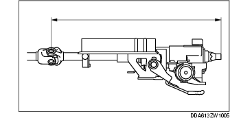

Steering shaft inspection
1. Inspect the column bearing for excessive play and damage.
2. Verify that the measurement of the steering shaft is as specified in the figure.

Steering shaft length
3. Inspect the tilt function operation for the following.

- (1) Verify that the tilt lever moves smoothly from the lock to the unlock position.
- (2) Verify that the steering shaft is fixed firmly when the tilt lever is locked.